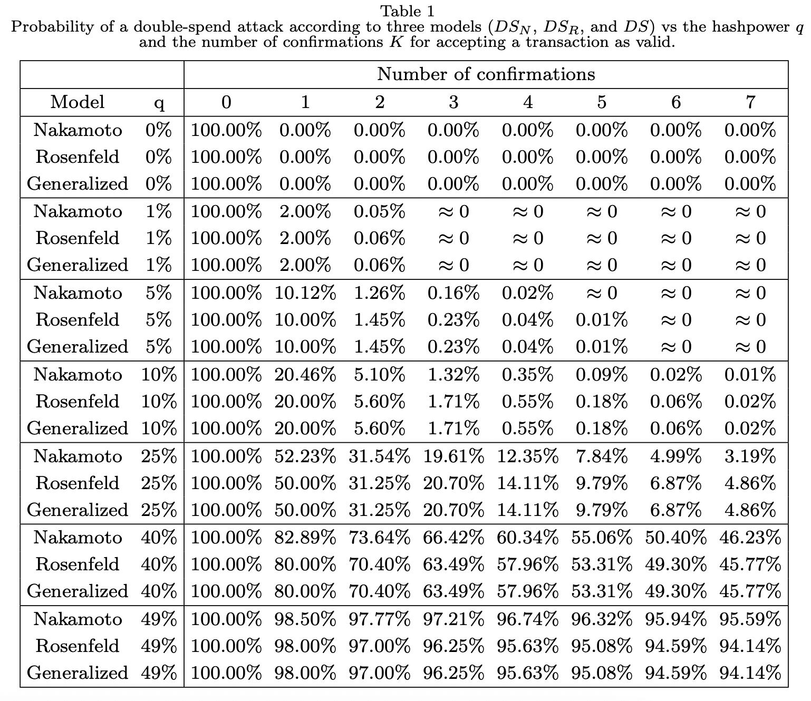

本篇適合人群：進階，對區塊鏈的概念有所了解，但對背後涉及的技術尚未認識的人群、一知半解的加密貨幣交易者們、不相信加密貨幣價值的任何人。
開始前，希望你都閱讀過概念篇與技術篇(一)，才更容易了解這裡的技術講解。
加密貨幣有三個基本問題需要解決，是其價值的基礎
- 可以相信這筆錢是真實的，而不是偽造的嗎？
- 可以確定數位貨幣只能使用一次嗎？（俗稱＂雙重支付＂，＂雙花＂問題）
- 可以確保除了我以外，沒有人可以聲稱我的一筆錢屬於他們嗎？
上一篇中，我們試著解答了Mastering Bitcoin中第一個問題，說明了私鑰/公鑰，地址的關係，還有橢圓加密演算法、數位簽章。 可以確定數位貨幣只能使用一次嗎？我們將它換一個刺激一點的題目，我要如何把數位貨幣花兩次？，相信大家都會喜歡無中生有的錢吧！ 正常的交易應該是類似下圖這樣，礦工會競爭一道數學難題，每次作答時間大約10分鐘，解答速度太快的話問題難度會上升，反之會下降。解答成功的礦工將答案和鏈上的資訊打包進一個區塊，下一個區塊的數學難題從上一個區塊內的資訊中出題。這個題目到底是甚麼？我推薦3Blue1Brown的科普頻道，動畫講解還有多國翻譯，業界良心。
雙重支付

當Bob看到#2區塊，上面記載了”韭菜苗給Bob1.4BTC”，Bob就想”哦，收到1.4BTC了”，於是Bob開開心心的把他的賓士車交給了韭菜苗。殊不知我在交易中動了手腳。
我同時生產了兩個區塊！這是怎麼做到的？有甚麼意義？
首先，所有礦工都有一個共識是”最長的那一條區塊鏈是真的”，因為最長，代表著大家都把計算資源投入在這裡，也是最可信的，而大家接下來也會繼續在這條鏈上繼續解題，沒有人會跑去那條比較短的鏈，你總不會跑馬拉松的時候跑較短的路線還要求要得名吧？(哲學一點的說法是…真理是什麼已經不重要了，真理就是大家相信什麼，那它就成為真理😎)
要做到這件事情，必要條件是：「比所有人都更快更強大的算力」，讓我在數學比賽中最快算出答案，也讓我生產最長的那條鏈，來讓大家都相信我。當我生產出區塊#2，區塊#2會告訴比特幣網路上的其他節點”韭菜苗給Bob1.4BTC”，Bob看到這個資訊後就給了韭菜苗賓士車。但Bob不知道的是，我同時在網路上傳播了區塊#F2。
現在比特幣網路上分成了兩派，有些節點先看到了區塊#2於是他們會繼續努力算出區塊#3。有些節點先看到了區塊#F2，於是他們會開始算區塊#F3。如果我能搶在有人算出#3之前，就先算出了#F3，那我就能讓其他人也開始相信#F3是最長的、最可信的那條鏈，#2也就被其他人所遺棄。🙅
腦袋是不是有點亂？我們用上帝視角再來看一次😉！
 這時候是區塊#1，所有節點都承認韭菜苗有1.4BTC在帳戶裡，因為Alice給了韭菜苗1.4BTC。這很重要，因為這才讓韭菜苗有權利使用這1.4BTC。
這時候是區塊#1，所有節點都承認韭菜苗有1.4BTC在帳戶裡，因為Alice給了韭菜苗1.4BTC。這很重要，因為這才讓韭菜苗有權利使用這1.4BTC。
這時候，比特幣網路分成兩派，一派先收到了#2，一派先收到了#F2。他們會選擇相信先收到的那條資訊。Bob因為先收到了#2，他就認為他收到了1.4BTC，也就將賓士車交給了韭菜苗。🙌
這時候我們算出題目囉，挖出了區塊#F3，區塊#F3繼承自#F2，也就是「韭菜苗給Cind1.4BTC」這件事成為了大家的共識。一個區塊中可以入上百筆交易，寫在區塊#2橘色倒三角形中交易會被重新打包，傳播在網路上，但是其中已經完成、重複的資訊則會被捨棄。「韭菜苗給Bob1.4BTC」這條資訊會被捨棄，因為大家檢查之後就知道，韭菜苗的1.4BTC已經給Cindy了，沒有任何BTC可以給Bob。😮
天下大勢，合久必分，分久必合。區塊#F3成為了新的統治者！哦…新的共識！ 這時候我騙過了Bob，和Cindy一起開心的駕駛賓士車出門玩。 而Bob正在懊惱自己太過著急，沒有多等幾個區塊之後再確認交易。 事實上，這樣的分岔每天都會發生數次，大家也都知道自己收到的區塊不一定是最終版本。這時候你會有兩個問題：
- 不對呀，我在交易所買比特幣不是立刻就到帳了嗎？
- Bob到底應該要等幾個區塊呢？
Well…第一個問題，交易所依然是有一個中心的伺服器的，你實際上只有在”交易所的伺服器紀錄”中，記錄你有多少比特幣。在一買一賣之間更改數據。如果真的將你的交易紀錄上區塊鏈，那他的手續費絕對不會是0.5%、0.1%這麼便宜… 這裡你就得選擇要不要相信交易所了，或者你可以轉往所有權力都在自己手上的去中心化交易所。或許我以後會再寫一篇文章(又在挖坑…) 第二個問題，六個區塊。 為甚麼是六個？這…這我們要來翻論文了，你確定？真的要看？
太棒了🤟！你居然繼續看下去了！
這裡是論文，感謝Doge在臉書的Bitcoin比特幣中文社團分享，其中有一張表格整理了模擬情況：

這裡有三種模擬模型Nakamoto、Rosenfield、Generalized。%數代表掌握幾%算力。 上面的這排數字要解釋一下，這個攻擊方法是”偷偷比別人多挖幾個區塊，偷跑在別人前面，但是不告訴大家，直到某個時候突然跳出來說我有最長的鏈”。我們來看左上角三個2.00%。它代表：
我掌握全網路 1% 算力，我有 2% 機會比別人多算 1 個區塊，再跳出來說我的鏈最長，大家來相信我！
它右邊的0.05%則代表：
我掌握全網路 1% 算力，我有 0.05% 機會比別人多算 2 個區塊，再跳出來說我的鏈最長，大家來相信我！
這樣應該看懂了吧？我們來看看右下角：
我掌握全網路 49% 算力，我有 95% 機會比別人多算 6 個區塊，再跳出來說我的鏈最長，大家來相信我！
我等大家都看過了好幾個區塊後，都以為這些區塊上的內容為真。這時候我跳出來說，我有更長的版本，我的才是真的！
所以，事實上不需要到51%算力，只需要49%我們就能在理論上大機率完成攻擊！
回到問題
問：可以確定數位貨幣只能使用一次嗎？（俗稱＂雙重支付＂，＂雙花＂問題）
答，理論上可以，實務上不可行。如果你掌握有大量算力，你有大機會雙重支付成功。但目前關於挖礦市場，它是有多家巨頭沒錯，但沒有一家掌握了超過51%算力。值得注意的是根據劍橋研究中國境內的算力大約占了65%，35%集中於新疆。另外前三大的礦機廠商比特大陸、比特微、嘉楠耘智都是中國背景。於是礦機國產，電費便宜，成了中國挖礦優勢。
那中國會不會哪天發動黨政優勢強制這些挖礦礦池做些什麼…Well，沒有人知道。但它其實並不符合他們自身的利益，這其實像是囚徒困境，白話說：攻擊比特幣的價值，要在比特幣上有大量投入，攻擊的話自身也損失慘重。
你可以在這裡看到世界上活躍的比特幣節點，歐洲節點活躍的多，但實際的算力少，有可能是這些節點都是拿來驗證交易用的，也就是它們是給大銀行拿來”看”的，沒有實際在挖礦。
也可以在這裡看到動區整理的礦業現況。
小結
一不小心這篇文章擱淺很久，而且篇幅遠超想像…還有問題三的坑也還沒填… 但其實看到這裡，你應該要能知道問題3的解答。 咦，沒辦法？真的要我再寫一篇文章？ 我之後盡力…